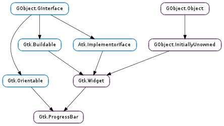

| static | new() |
| get_ellipsize() | |
| get_fraction() | |
| get_inverted() | |
| get_pulse_step() | |
| get_show_text() | |
| get_text() | |
| pulse() | |
| set_ellipsize(mode) | |
| set_fraction(fraction) | |
| set_inverted(inverted) | |
| set_pulse_step(fraction) | |
| set_show_text(show_text) | |
| set_text(text) |
| Name | Type | Flags | Description |
|---|---|---|---|
| ellipsize | Pango.EllipsizeMode | r/w | The preferred place to ellipsize the string, if the progress bar does not have enough room to display the entire string, if at all. |
| fraction | float | r/w | The fraction of total work that has been completed |
| inverted | bool | r/w | Invert the direction in which the progress bar grows |
| pulse-step | float | r/w | The fraction of total progress to move the bouncing block when pulsed |
| show-text | bool | r/w | Whether the progress is shown as text. |
| text | str | r/w | Text to be displayed in the progress bar |
None
| Name | Type | Access |
|---|---|---|
| parent | Gtk.Widget | r |
Bases: Gtk.Widget, Gtk.Orientable
The Gtk.ProgressBar is typically used to display the progress of a long running operation. It provides a visual clue that processing is underway. The Gtk.ProgressBar can be used in two different modes: percentage mode and activity mode.
When an application can determine how much work needs to take place (e.g. read a fixed number of bytes from a file) and can monitor its progress, it can use the Gtk.ProgressBar in percentage mode and the user sees a growing bar indicating the percentage of the work that has been completed. In this mode, the application is required to call Gtk.ProgressBar.set_fraction () periodically to update the progress bar.
When an application has no accurate way of knowing the amount of work to do, it can use the Gtk.ProgressBar in activity mode, which shows activity by a block moving back and forth within the progress area. In this mode, the application is required to call Gtk.ProgressBar.pulse () periodically to update the progress bar.
There is quite a bit of flexibility provided to control the appearance of the Gtk.ProgressBar. Functions are provided to control the orientation of the bar, optional text can be displayed along with the bar, and the step size used in activity mode can be set.
| Returns: | a Gtk.ProgressBar. |
|---|---|
| Return type: | Gtk.Widget |
Creates a new Gtk.ProgressBar.
| Returns: | Pango.EllipsizeMode |
|---|---|
| Return type: | Pango.EllipsizeMode |
Returns the ellipsizing position of the progress bar. See Gtk.ProgressBar.set_ellipsize ().
| Returns: | a fraction from 0.0 to 1.0 |
|---|---|
| Return type: | float |
Returns the current fraction of the task that’s been completed.
| Returns: | True if the progress bar is inverted |
|---|---|
| Return type: | bool |
Gets the value set by Gtk.ProgressBar.set_inverted ().
| Returns: | a fraction from 0.0 to 1.0 |
|---|---|
| Return type: | float |
Retrieves the pulse step set with Gtk.ProgressBar.set_pulse_step ().
| Returns: | True if text is shown in the progress bar |
|---|---|
| Return type: | bool |
Gets the value of the Gtk.ProgressBar :show-text property. See Gtk.ProgressBar.set_show_text ().
| Returns: | text, or None ; this string is owned by the widget and should not be modified or freed. |
|---|---|
| Return type: | str |
Retrieves the text displayed superimposed on the progress bar, if any, otherwise None. The return value is a reference to the text, not a copy of it, so will become invalid if you change the text in the progress bar.
Indicates that some progress has been made, but you don’t know how much. Causes the progress bar to enter “activity mode,” where a block bounces back and forth. Each call to Gtk.ProgressBar.pulse () causes the block to move by a little bit (the amount of movement per pulse is determined by Gtk.ProgressBar.set_pulse_step ()).
| Parameters: | mode (Pango.EllipsizeMode) – a Pango.EllipsizeMode |
|---|
Sets the mode used to ellipsize (add an ellipsis: ”...”) the text if there is not enough space to render the entire string.
| Parameters: | fraction (float) – fraction of the task that’s been completed |
|---|
Causes the progress bar to “fill in” the given fraction of the bar. The fraction should be between 0.0 and 1.0, inclusive.
| Parameters: | inverted (bool) – True to invert the progress bar |
|---|
Progress bars normally grow from top to bottom or left to right. Inverted progress bars grow in the opposite direction.
| Parameters: | fraction (float) – fraction between 0.0 and 1.0 |
|---|
Sets the fraction of total progress bar length to move the bouncing block for each call to Gtk.ProgressBar.pulse ().
| Parameters: | show_text (bool) – whether to show superimposed text |
|---|
Sets whether the progress bar will show text superimposed over the bar. The shown text is either the value of the Gtk.ProgressBar :text property or, if that is None, the Gtk.ProgressBar :fraction value, as a percentage.
To make a progress bar that is styled and sized suitably for containing text (even if the actual text is blank), set Gtk.ProgressBar :show-text to True and Gtk.ProgressBar :text to the empty string (not None ).
| Parameters: | text (str or None) – a UTF-8 string, or None |
|---|
Causes the given text to appear superimposed on the progress bar.
If text is None and Gtk.ProgressBar :show-text is True, the current value of Gtk.ProgressBar :fraction will be displayed as a percentage.
If text is non-None and Gtk.ProgressBar :show-text is True, the text will be displayed. In this case, it will not display the progress percentage. If text is the empty string, the progress bar will still be styled and sized suitably for containing text, as long as Gtk.ProgressBar :show-text is True.